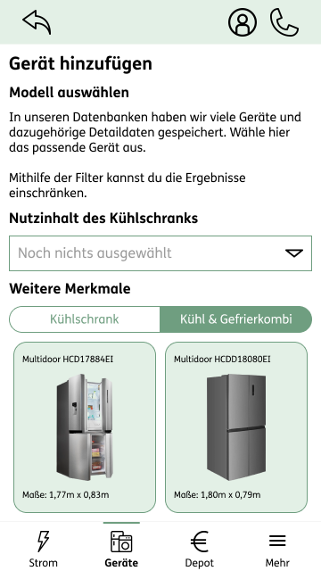

Webdesign - Hotelwebseite

Im Projekt Webdesign ist das Ziel einen Webauftritt für ein fiktives, nachhaltiges Hotel oder eine Ferienanlage zu erstellen. Hierzu gehört neben der reinen Erstellung auch die Ausarbeitung eines nachhaltigen Konzepts.
Zu den einzelnen Aufgaben gehören unter anderem Konkurrenz- und Zielgruppenanalysen sowie die Ausgestaltung von Personas, Mood Boards und eines Styleguides. Der Designprozess selbst erstreckt sich von Skizzen, über LoFis, Wireframes bis hin zu einem abgabereifen und funktionalen Prototype
Mobile Design - Nachhaltige App


Beim Mobile Design war ebenfalls die Nachhaltigkeit im Fokus. Das Themengebiet der App konnte unter diesem Fokus frei gestaltet werden. Die Wahl fiel auf eine App, welche den Stromverbrauch überwacht, Tipps zum Sparen gibt und das gesparte Geld direkt in nachhaltige Anlagen investieren lässt.
Neben dem Konzept war auch hier der Designprozess mit verschiedenen Artefakten über Konkurrenzanalysen, Personas, Styleguides und vielfältigen Visualisierungen das Kernstück des Projekts.
UI von Unternehmenssoftware

Innerhalb des Projekts UI von Unternehmenssoftware wechselte der Blickwinkel von der Gestaltung einer Endkunden-UI zur der eines internen Programms zur Verwaltung von Reklamationen und Reparaturanfragen. Neben spannenden Erkenntnissen brachte das Projekt auch einige Herausforderungen mit sich.
Im Fokus war die Erstellung eines Interaktionskonzepts, der Informations-architektur und die Verwendung und Individualisierung eines Design Systems. Weitere Artefakte waren Moodboards, Skizzen und Prototypen